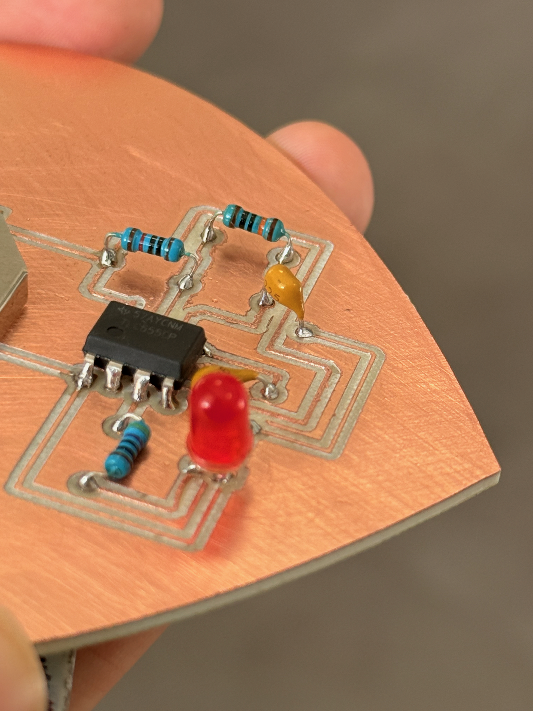
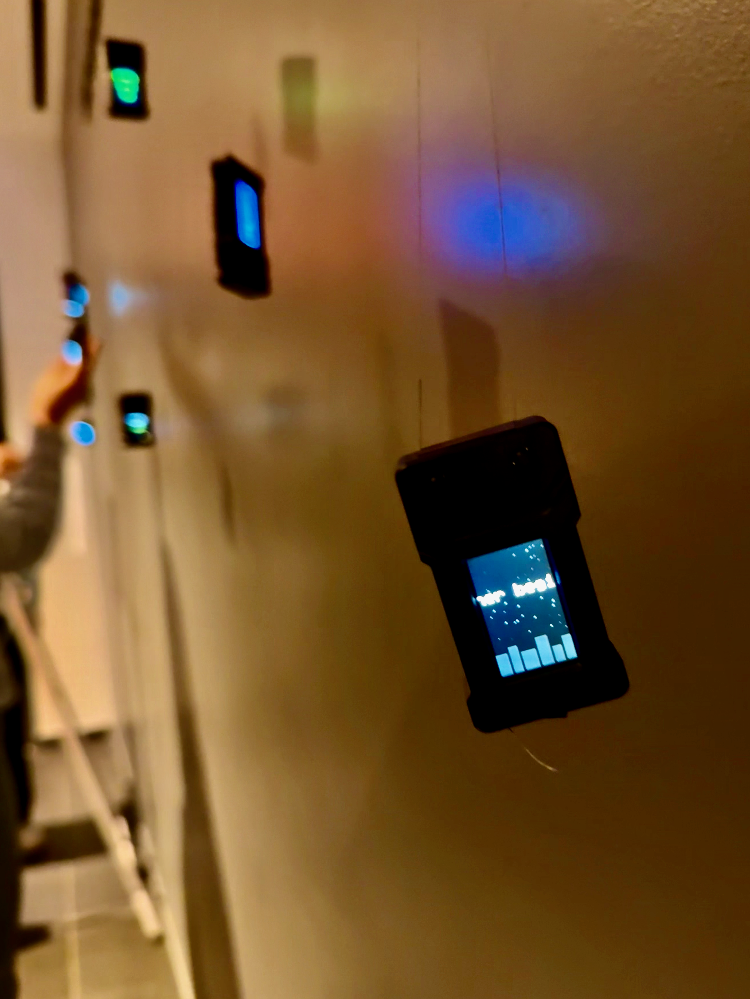
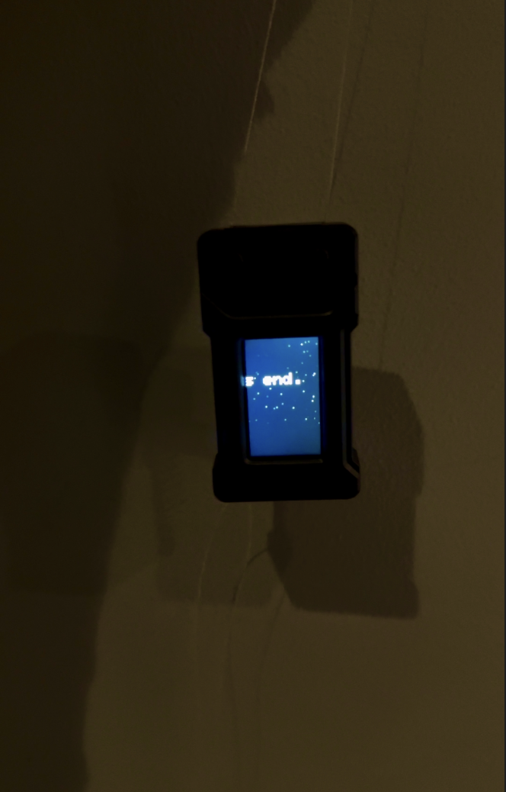
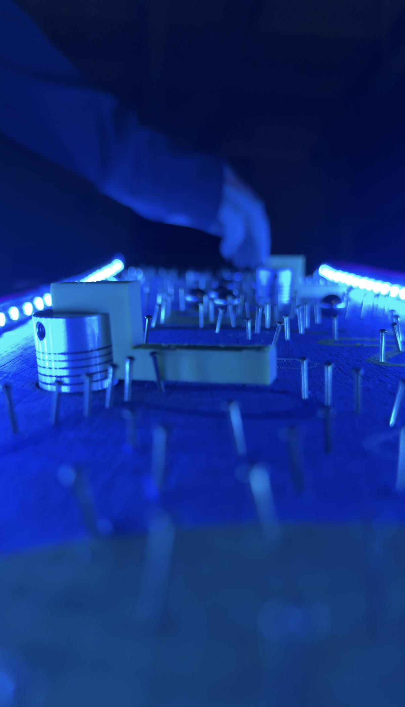
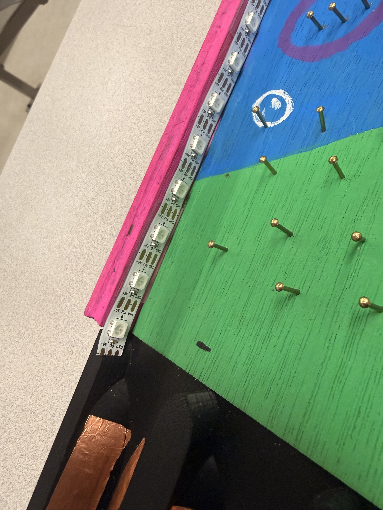

These are some of my projects
Metamorphosis


This piece uses the symmetry of the protoboard the butterfly form created from bent brass wire.
Reflection
I approached this piece by treating the protoboard as both a structural and visual spine, using its natural symmetry to guide the overall form. The butterfly shape emerged as I bent and shaped the brass wire, allowing the design to grow outward in a balanced way. The butterfly represents my own growth and transformation throughout my years at Columbia, much like how a butterfly gradually changes over time. This piece reflects how my skills, confidence, and creative thinking have evolved through continued practice and learning.
Heartbeat


This project involves designing and manufacturing a custom printed circuit board (PCB) for a 555 timer LED flasher circuit using KiCAD software for layout, converting the design files to SVG format, and then physically milling the board on a Carvey CNC machine. After milling the traces, drill holes, and board outline, you'll solder the electronic components (including a 555 timer chip, resistors, capacitors, and an LED) onto the board to create a functional blinking LED circuit powered by a coin cell battery.
Reflection
This project tested my soldering skills considering that my copper pads were pretty small and I had to be very careful and steady when soldering. I chose a heart-shaped design for this project because the pulsing LED mirrors the rhythm of a heartbeat. By having a higher flashing frequency, I wanted to capture the way love accelerates your heart rate due to the feeling of excitement and connection.
Technical DocumentationFleeting City



This project involves using an ESP32 as a canvas to create a generative art piece with code. I made sure to implement a random aspect, sentence, and a visual effect to capture my message.
Reflection
The ESP32 became a canvas for my creativity through code. As I explored the world of generative art, I became fascinated by how pieces can feel both simple and complex at the same time. For Fleeting City, I drew inspiration from my past four years of college in New York City. Being only a few months away from graduation brings a sense of bittersweet emotion that I tried to express through the darkness of the piece contrasted with twinkling stars. Although I often felt out of place in the city, the memories I have made outweigh many of the challenges I faced. The quote I chose was influenced by the transition I will soon experience as I move into my post graduation chapter. I introduced randomness in the stars to reflect uncertainty and change. As the quote moves across the screen, the city slowly fades until only the stars and the word “end” remain. This symbolizes that while this chapter of my life is ending, I will carry my memories and experiences into what comes next. The constant looping of the visual elements represents my journey of closing one chapter and beginning another in order to grow.
Technical DocumentationBloomscape
▶ Watch VideoThis project uses an ESP32 capacitive touch interface to send serial events to a Python Pygame application, where multi mode input controls real time planting, growth, cutting, and bouquet rendering in a virtual garden.
Reflection
My goal with Bloomscape was to create a space where users feel like they are caring for a living garden rather than using a traditional interface.
Using capacitive touch sensors on the ESP32, actions like planting, watering, and cutting are performed through touch, making the interaction feel intuitive.
To further connect the physical and digital spaces, I created tangible props. A watering can is wired with a sensor so that when it touches a flower pad, the system detects the interaction and waters the flower.
Similarly, I built a pair of scissors that, when touched to a flower’s touch pad, triggers a cut action in the virtual garden.
These objects reinforce the illusion of real gardening tools and make the experience more immersive. I added subtle animations like swaying stems, falling petals, and water droplets
help create a responsive ecosystem. I also simplified the interface by using single, double, and triple taps for mode switching, reducing hardware complexity while keeping the interaction playful.
Technically, I encountered challenges with capacitive touch sensitivity and noise, requiring careful threshold tuning and cooldown logic to prevent false triggers.
I also had to work within the constraints of ESP32 touch capable pins and ensure reliable serial communication with the Pygame application.
These constraints ultimately shaped both the interaction design and the final experience.
Spongebob Pachinko Board
▶ Watch VideoWorked with Hope, Olivier and Trinity. A SpongeBob themed interactive pachinko game that creatively blends playful design with sensors, wireless ESP32 communication, motorized elements, LED lights, sounds, and a 7 segment display that shows the score to dynamically respond to ball movement in real time.
Reflection
This project turns a regular pachinko board into a fun SpongeBob underwater scene that actually feels playful and alive.
When we chose SpongeBob as our theme, it came from a shared nostalgic feeling since it is something we all grew up with, and we really wanted to bring that same sense of fun and familiarity into the board.
A big part of the process was figuring out nail patterns that were both fun and unpredictable for the ball paths, but also realistic enough to work with the placement of the motors.
We had to think about how the balls would bounce and spread out, while making sure the moving arms could still influence their direction in a noticeable way.
The nails are also blended into the design with bubbles and sea shapes so the board still looks clean and cohesive.
The moving arms feel like part of the environment too, almost like currents or sea creatures guiding the balls.
Overall, it combines art, nostalgia, and interaction in a way that makes the game feel really dynamic and fun to play.
One of the main technical challenges we faced was figuring out the right threshold for when the motors should react.
If the system triggered too often, the motors would constantly move and make the game feel chaotic, but if the threshold
was too high, nothing would happen and the system wouldn’t feel responsive. We had to experiment with different values and watch how the
ball distribution changed over time to find a balance that felt natural. Another challenge was making sure the ball collector reliably detected every ball.
At first, we ran into issues with missed detections and false triggers due to inconsistent contact with the copper tape and noise in the signal.
We had to adjust the placement of the sensors, tweak our debounce timing, and test repeatedly to make sure each ball was counted accurately.
These challenges pushed us to really think about both the physical design and the code working together, and getting it right made the final system feel much smoother and more responsive.
Final Spongebob Pachinko Board




Worked with Hope, Olivier and Trinity. A SpongeBob themed interactive pachinko game that creatively blends playful design with sensors, wireless ESP32 communication, and motorized elements to dynamically respond to ball movement in real time.
Reflection
For my final project, we continued developing our SpongeBob themed pachinko board by focusing on making the experience feel more immersive and authentic to a real arcade or pachinko machine.
Our goal was to create a system where lights, sounds, movement, and score feedback all worked together to make the board feel playful, responsive, and alive while still fitting the underwater SpongeBob theme.
To achieve this, we added WS2812 programmable LED lighting, bonus point logic, sound effects, and a 7 segment score display.
The lights react in real time to gameplay events such as score milestones, bonus sequences, and motor movement, helping make the gameplay feel more dynamic and rewarding.
We also integrated sound effects and music to reinforce the arcade atmosphere, while the 7 segment display continuously updates the player’s score during gameplay.
One of my biggest technical challenges was integrating the lights, sound system, motors, and scoring system together so they could all respond in real time without interrupting gameplay.
Another issue was ensuring the WS2812 LED strip received stable power and signal connections, since loose wiring could cause sections of the strip to stop responding.